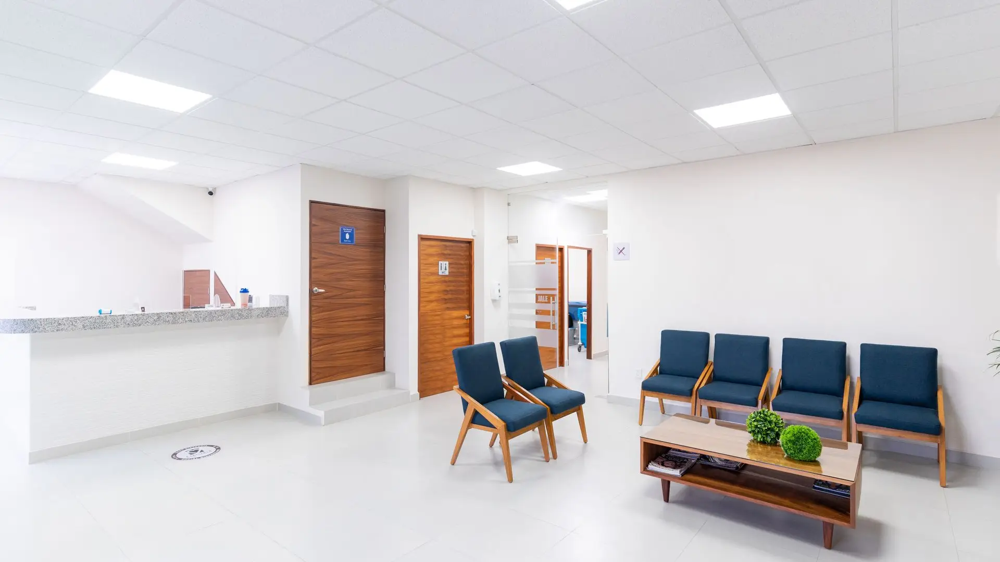
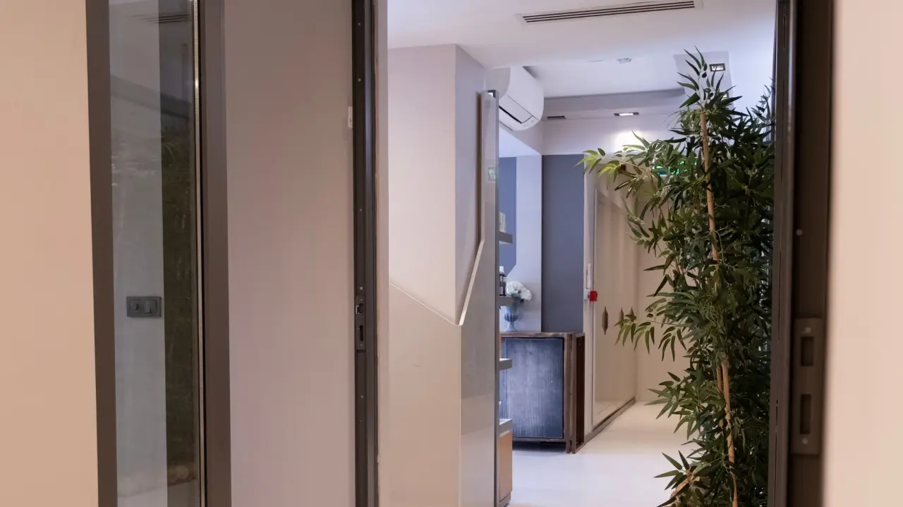
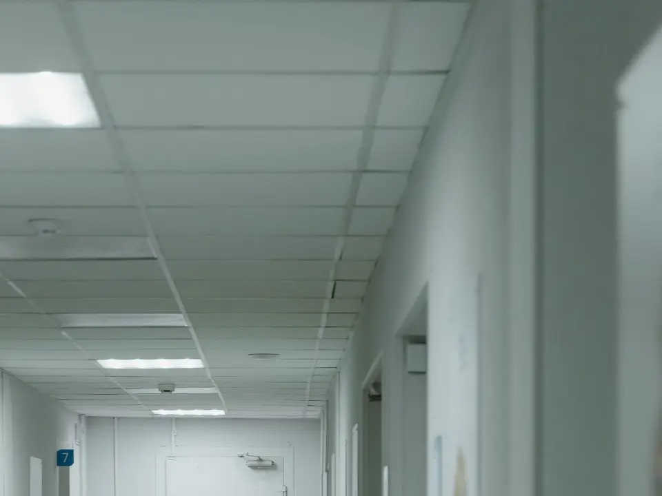
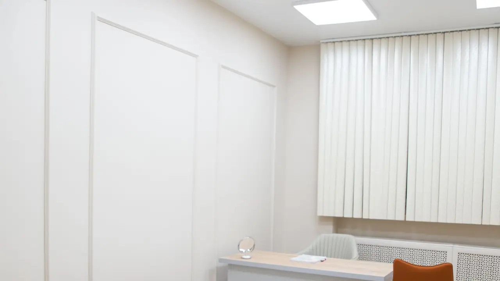
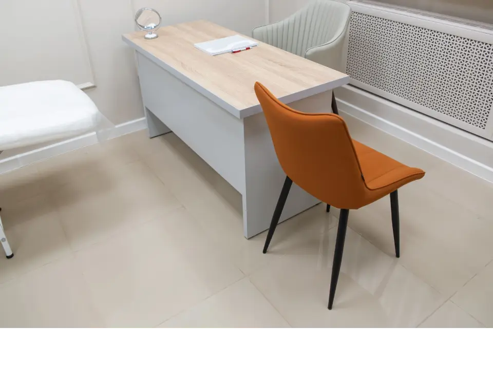
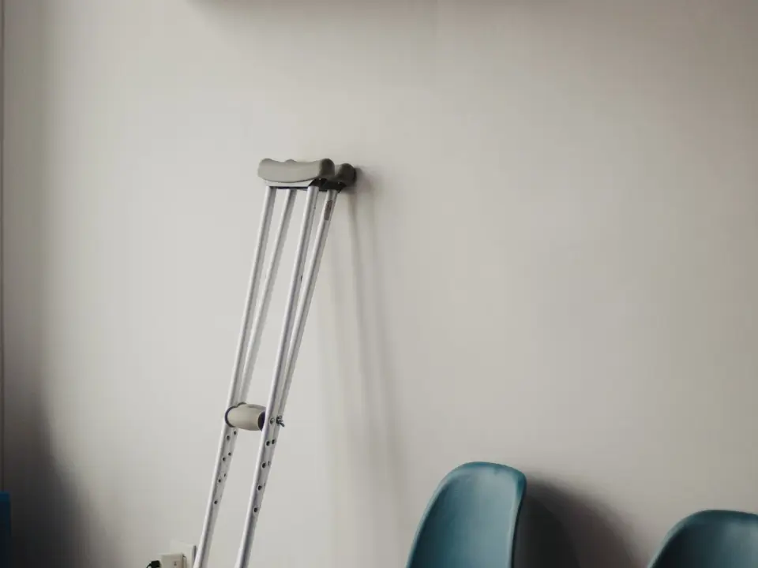

8/22
Places restantes au sans rendez-vous
Huit sur vingt-deux au relevé de 9 h 10. Quatorze sont déjà prises depuis l’ouverture.
Site de démonstration — entreprise fictive, aucun soin réel n’est offert
Clinique médicale familiale · Québec
Au sans rendez-vous, on inscrit votre nom, on vérifie tout de suite si votre cas relève de l’urgence, puis on vous donne un numéro et une heure. Vous pouvez sortir en attendant : l’heure donnée tient.
Cinq médecins, deux infirmières praticiennes, une physiothérapeute Sans rendez-vous du lundi au samedi, le matin

Ce matin
On n’écrit pas « selon la disponibilité ». Trois chiffres sont relevés à 7 h 40 et à 13 h, et ce sont ceux-là qu’on vous donnera au téléphone.
Huit sur vingt-deux au relevé de 9 h 10. Quatorze sont déjà prises depuis l’ouverture.
De l’inscription au moment où on vous appelle. L’anneau est plafonné à quatre-vingt-dix minutes.
Elle ferme à cinquante. Au-delà, la réception vous le dit et n’inscrit pas votre nom.
Les délais, les places et les nombres de cette page sont inventés : c’est un site de démonstration. Sur une vraie clinique, ils viendraient du logiciel de rendez-vous et changeraient deux fois par jour.
Le sans rendez-vous
Quand elles sont prises, la réception vous le dit à la porte, avec le délai du lendemain. Elle ne vous fait pas asseoir « au cas où ».
Carte d’assurance maladie et une pièce d’identité. L’inscription prend deux minutes, et on ne vous demande pas le motif à voix haute au comptoir.
Neuf signes sont vérifiés dès l’inscription. Si l’un d’eux est présent, vous ne vous assoyez pas : on appelle le 9-1-1 et quelqu’un reste avec vous.
Pas « bientôt ». Une heure, écrite. Si elle change de plus de quinze minutes, quelqu’un vient vous le dire.
Le stationnement, le café d’en face, une marche : rien ne vous oblige à rester assis dans le corridor jusqu’à votre tour.
La liste ferme. On vous donne le délai du lendemain et, si votre cas ne peut pas attendre, on vous dit où aller — même si ce n’est pas ici.

Le matin est ouvert à tout le monde, dossier ou pas. Venir le matin ne vous inscrit pas non plus : l’inscription passe par une première visite.
Ce qui ne se règle pas le matin — ces cinq-là se prennent sur rendez-vous.
L’équipe
Ni photo, ni nom de famille, ni biographie. Ce qui sert quand on appelle, c’est de savoir qui peut vous voir pour votre affaire — et ce qu’une personne ne prend pas est écrit aussi gros que ce qu’elle prend.
Médecine familiale · depuis 2011
Médecine familiale · depuis 2004
Médecine familiale · depuis 2016
Médecine familiale · depuis 2009
Médecine familiale · depuis 1998
Infirmière praticienne · première ligne
Infirmier praticien · première ligne
Physiothérapeute · salles 10 et 11
Les résultats
« Pas de nouvelle, bonne nouvelle » est une méthode qui repose sur le fait qu’un appel n’a pas été oublié. On préfère appeler tout le monde : c’est plus long, et c’est le seul moyen de savoir qu’on n’a oublié personne.

Trois jours ouvrables. L’anneau est plafonné à dix : au-delà, c’est nous qui relançons le laboratoire, pas vous.
Un résultat ne se transmet pas par un moyen qu’on ne contrôle pas. On appelle, ou on vous reçoit. La réception peut confirmer qu’un résultat est arrivé, rien de plus.
Un résultat anormal n’est pas laissé sur une boîte vocale. On rappelle jusqu’à vous parler, à trois reprises, puis on envoie une lettre.
Vos résultats sont à vous. Demandez-les à l’accueil : ils sont prêts en 48 heures, et il n’y a rien à payer pour les obtenir.
La visite
Les deux photographies ci-dessous montrent la même pièce, prise de deux angles. On ne montre pas deux salles pour faire croire qu’il y en a plus : les onze se ressemblent, et celle-ci est représentative.


Ce qu’il faut apporter — cinq choses, et l’oubli de l’une d’elles fait reprendre le rendez-vous.
La carte sert à retrouver votre dossier sans erreur d’homonyme.
Les contenants, plutôt qu’une liste écrite de mémoire. Vitamines comprises.
Prises de sang, radiographies, rapports. On n’a pas accès aux dossiers des autres cliniques.
Sans lui, une ordonnance ne part pas à la fin de la consultation.
Le carnet de vaccination lui-même, pas une photo floue. Sans lui, une dose peut être reportée.
Le matériel

Béquilles, canne, attelle de poignet, sac de glace : c’est prêté, sur signature, et rapporté. Il n’y a pas de boutique ici, et il n’y en aura pas.
Quand l’appareil dont vous avez besoin ne se prête pas, on vous écrit ce que c’est sur un papier et vous l’achetez où vous voulez. Il n’y a aucun présentoir dans la salle d’attente ; l’espace où il serait sert à ranger les béquilles.
Personne ici n’est payé au nombre d’examens demandés ni au nombre de séances données. Quand on vous envoie ailleurs — laboratoire, imagerie, spécialiste — on ne reçoit rien pour l’avoir fait.
La physiothérapeute ne vous dira pas d’avance combien de séances il vous faut. Elle réévalue à la troisième et vous dit alors ce qu’elle voit, y compris quand c’est « on arrête ».
Ce qui ne relève pas de nous
Cette liste est vérifiée à l’inscription, avant que vous ne vous assoyiez. Il n’y a ici ni salle de réanimation, ni imagerie, ni laboratoire : vous faire attendre quarante minutes vous ferait perdre quarante minutes.
Avec ou sans douleur au bras, au dos ou à la mâchoire. Ne conduisez pas vous-même.
Souffle court au repos, incapacité à finir une phrase, lèvres ou ongles bleutés.
Bras ou jambe qui tombe, bouche croche, parole embrouillée. L’heure exacte du début compte.
Même si la personne est revenue à elle, même si ça n’a duré que quelques secondes.
Après dix minutes de pression continue, sans relâcher pour regarder. Ou un saignement qui gicle.
Ou avec somnolence, confusion, ou une pupille plus grande que l’autre.
Après une piqûre, un aliment ou un médicament, avec serrement de la gorge.
38 °C ou plus. À cet âge-là, la fièvre se regarde à l’hôpital, pas ici.
Appelez le 9-1-1 si le geste est proche. Vous pouvez aussi le dire à l’accueil : on appelle avec vous.
Urgence, ambulance. Vingt-quatre heures sur vingt-quatre, partout au Québec.
Info-Santé. Une infirmière vous dira si ça peut attendre notre prochaine plage. Jour et nuit, gratuitement.
Info-Social. Pour la détresse, l’anxiété, une crise à la maison. Jour et nuit, gratuitement.
Prendre rendez-vous
Tout se fait au téléphone. Choisissez une étape pour voir ce qui s’y passe.
C’est la voie la plus rapide, et de loin : la réception voit les désistements de la journée, ce qu’aucun formulaire ne voit. Un motif en trois mots suffit — personne ne vous demandera de détail médical au téléphone, et rien n’est noté au dossier avant que vous voyiez un professionnel.
C’est pour ça qu’on vous pose deux ou trois questions avant de fixer l’heure. La durée bloquée à l’horaire est la durée réelle, pas une moyenne : c’est ce qui fait qu’un rendez-vous de 10 h commence à 10 h, et non à 10 h 25.
La confirmation se fait par téléphone ; aucun rendez-vous n’est confirmé par courriel. Si quelqu’un annule, on rappelle dans l’ordre de la liste d’attente, jamais dans un autre — c’est la seule façon d’être vu plus tôt que sa date.
Trois étapes · au dernier relevé, la prochaine plage libre, toutes disciplines confondues, était à deux jours.
Il n’y a pas de service de garde la nuit, et pas de répondeur qui rappelle. En dehors des heures : 8-1-1, ou 9-1-1 si c’est urgent.